March 15 - 27, 2009
| Day 6 - Sunday, March 21
This was the day we left the Galilee and everyone was sad about that. On this early morning I went out with my camera instead of my running buddies to get some final pictures of the beautiful area. Our tour started with a stop at a pharmacy in Tiberius for an "Ace
Band" as Amir called it, so that Lena could properly wrap Chris'
ankle. Since we already had a late start, we decided to go for broke
and make an Aroma stop as well. Then we saw Belvoir Castle / Beit
She'an / Sachne / Gideon Springs / the West Bank / Jericho (only seen from
a distance) / Qumran (the site where the Dead Sea Scrolls were found) /
and the Dead Sea. |
|
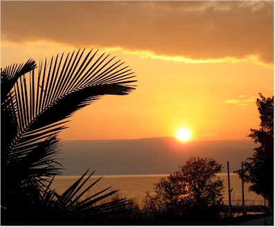 |
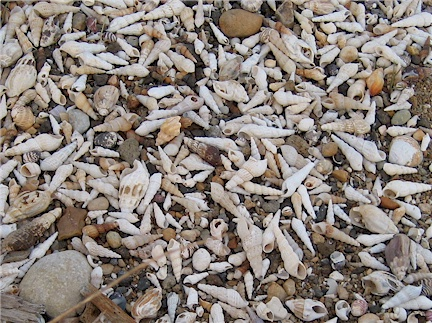 |
| This is my favorite picture that I took on this trip. | The shells were so pretty. I hope to make some jewelry out of them. |
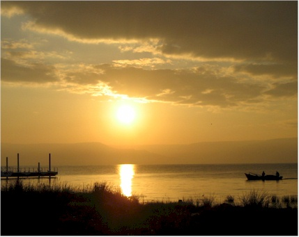 |
|
| Sunrise & fishermen - they just go
together.
|
|
|
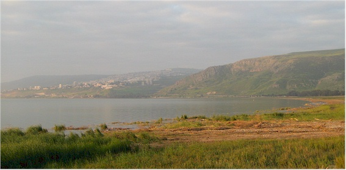 Tiberius in the morning light. |
|
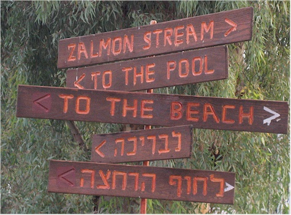 |
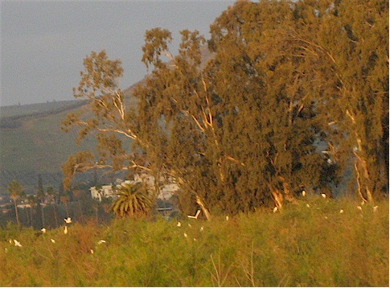 |
| Here I'm adding the "Zalmon Stream" to my collection of bad translations. | There were hundreds of birds living in the area just inland of the sea. |
|
|
|
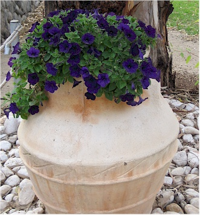 |
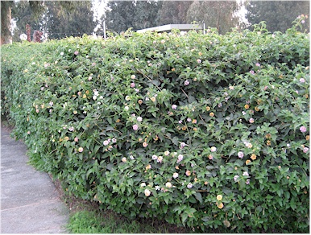 |
| I just thought this was pretty. | This is a large hedge made completely of
Lantana. In my part of the world, Lantana is just a small little bushy flower. Not here! |
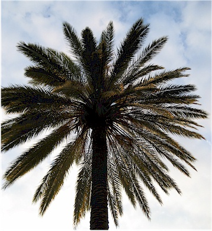 |
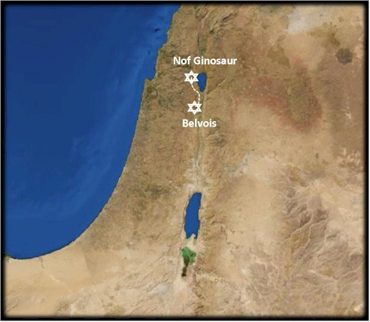 |
| A last look at the beautiful trees before we left our hotel. | Our first attraction was Belvior Castle - A Crusader fortress built in 1096. |
|
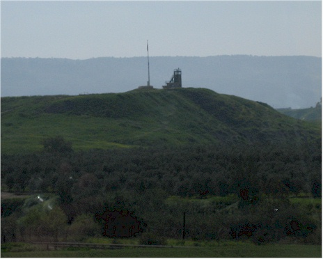 |
On the way there, we passed this Jordanian lookout
tower. Amir told us about an event that happened (I think in this area)
in 1997. I got more details about this from the Israel Ministry of
Foreign affairs web site:
Seven middle school girls from Beit Shemesh were killed during a school trip to the Peace Island park at Naharayim on the Israel-Jordan border, when a Jordanian soldier opened fire on the group from across the border. They were all aged 13 & 14. In an unprecedented act, King Hussein of Jordan traveled to Israel and visited all the families of the Israeli junior high school students who were killed, during the period of mourning in their homes in Beit Shemesh. |
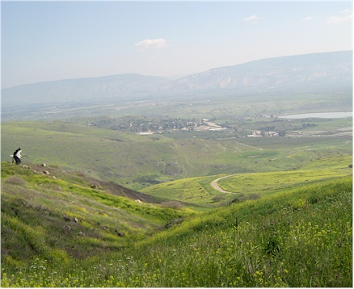 |
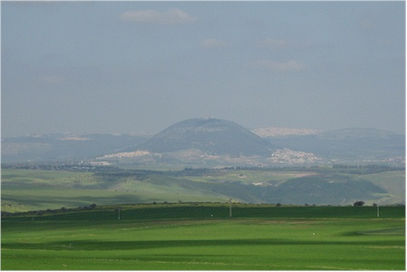 |
| There were storks migrating through the area, I caught one at the far left above. | I am pretty sure this is Mt. Tavor |
|
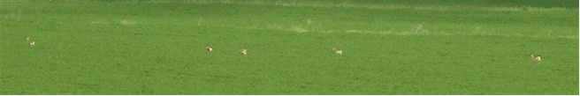 These were some deer crossing in the field from the picture above.
|
|
|
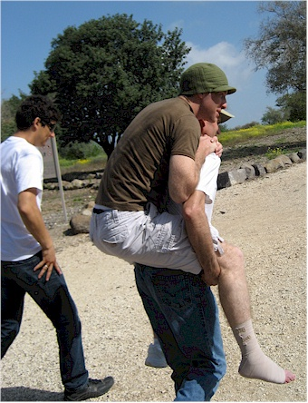 |
They are not going to be happy with me for posting these, but I thought it was sweet how so many of the guys pitched in to help carry Chris until we could get him some crutches. The castle was a LONG and rocky walk from the bus. |
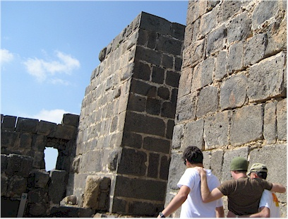 Here they are using a fireman's carry, which worked well except that Rigert is so tall. I kindly cut off the underwear flash that Chris was unintentionally giving. |
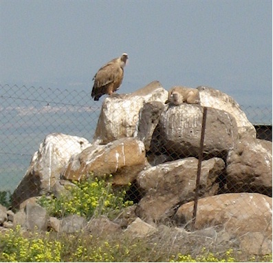 |
| Griffen Vultures in a habitat they have
created for them. It was a bit poopy. |
|
|
|
|
|
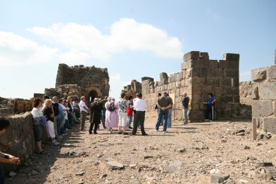 The group getting a lesson about the castle from Amir. We were told it took over 2 years for the Muslims to take this place. He said they had so much respect for them after the way they fought that they made an agreement to let the Crusaders go and save the fort. |
|
|
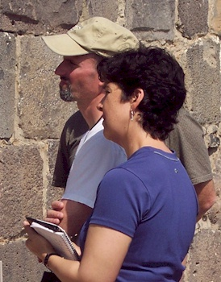 |
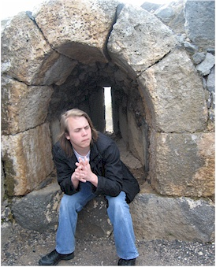 |
|
Eric & I learning with intensity |
Zach in an archer's key hole
|
| 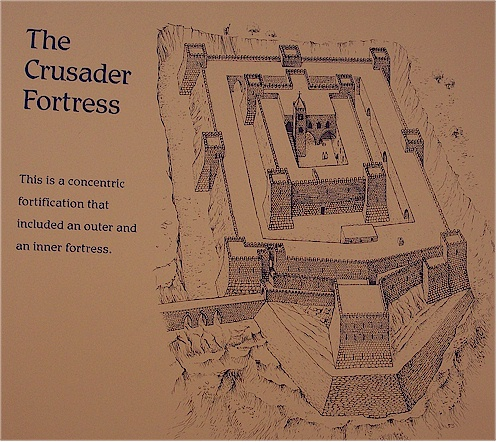 |
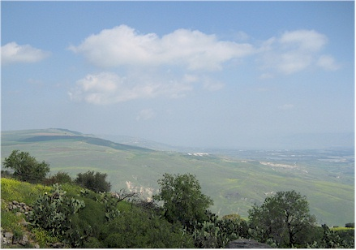 The view from the top. |
|
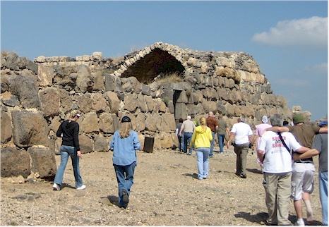 Going inside the 2nd wall, Chris hobbling along in the lower right. |
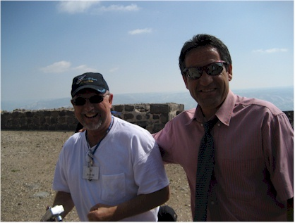 Pals |
|
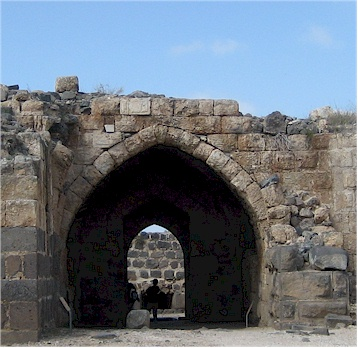 |
Crusader arches are always pointed at the top like this. |
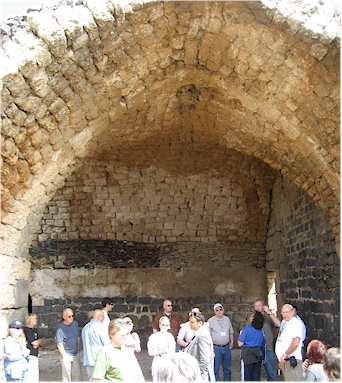 |
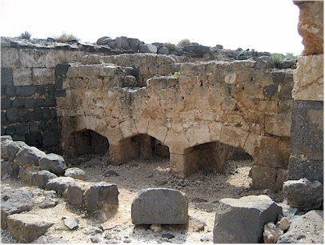 |
| This was a dining hall. | These were the brick ovens - I guess they could have
wood-fired, brick-oven pizza every night if they wanted. Oh wait, that isn't Kosher. Sad for them! |
|
|
|
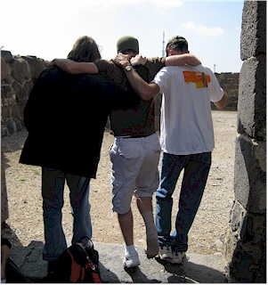 |
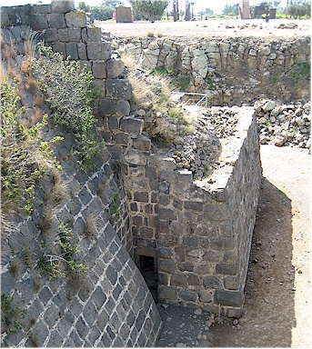 |
| More Chris hobbling. | A secret door that was very hard to see from most angles. |
|
|
|
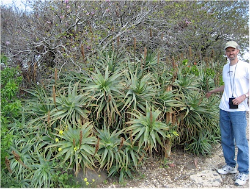 |
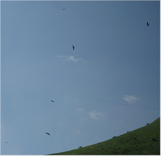 |
| Eric, providing scale for this strange plant.
|
Storks circling the area.
|
|
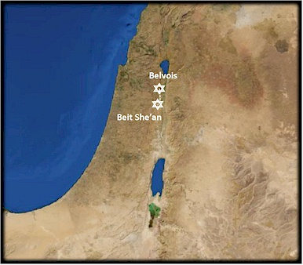 |
Next we went to Beit She'an.
This place was like Certs - two cities in one. |
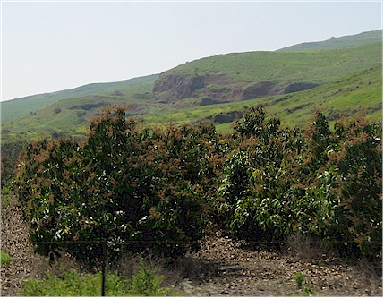 |
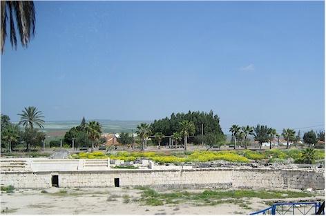 |
| These were some of the many mango groves we passed
as we drove around. |
I think this was a hippodrome, but it could have
been an amphitheater. They know but I have forgotten. |
|
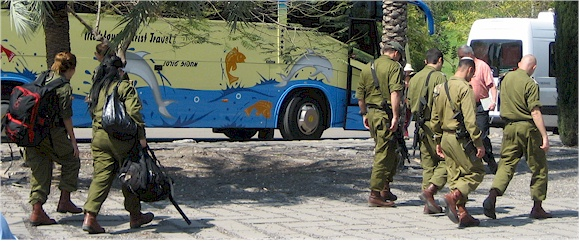 We saw this everywhere, but it never ceased to fascinate me. These are young people doing their military service, carrying machine guns as casually as I carry a purse. |
|
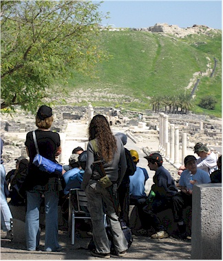 |
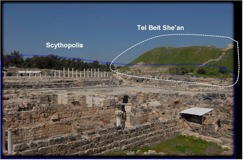 |
| It is now a law in Israel (since the March 1997
incident) that all school trips are accompanied by an armed guard. It is often a girl who looks like she belongs at the mall, but I'll bet she knows how to use that gun if she needs to. |
There are at least 20 cities represented in this Tel
(the hill area) but there are two that are focused on here. The city on top of the hill was an Old Testament city mentioned in the Book of Samuel. The lower part was a huge Greek & Roman city. |
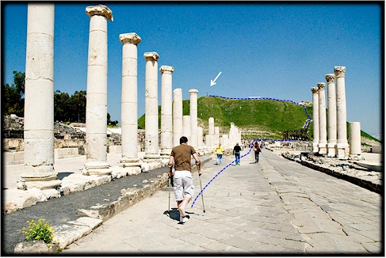 |
This shows Chris on the Cardo - the main street. The columns used to provide shade for the sidewalks. Pastor Ken also added a blue line to indicate the path he took up the hill on his brand new crutches. I didn't get a picture of the giant blisters he had on his hands after this, but I should have. |
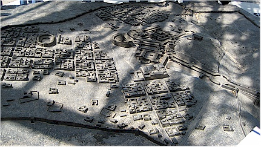 |
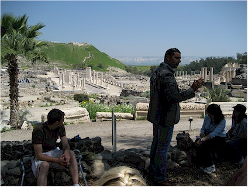 |
| A model of the excavated area - it is a very
big area. It could keep going too, but they don't want to destroy the modern-day city to get to it. |
Amir giving us a history lesson. He told us they
found this city by accident while they were building a park the bulldozers hit some columns. |
| Teaching: Pastor David
In 1085 B.C. Eli was raising Samuel at the temple. Israel wanted to be like everyone else who had a king. It was sinful for them to want this as we read in 1 Samuel 12:19, "...for we have added to all our sins this evil by asking for ourselves a king." God allowed them to have one but only on the condition that they continued to serve God with all their hearts. We can learn from this that God will work even through our sin if we turn from it and turn to Him. Pastor David took us through the main events in Saul's life. Unfortunately he became disobedient and prideful to the point where the Lord left him to his own devices, which is not a good place to be. The Philistines overtook Saul and his sons; and the
Philistines killed Jonathan and Abinadab and Malchi-shua the sons of Saul. The
battle went heavily against Saul, and the archers hit him; and he was badly
wounded by the archers. Then Saul said to his armor bearer, �Draw your sword
and pierce me through with it, otherwise these uncircumcised will come and
pierce me through and make sport of me.� But his armor bearer would not, for
he was greatly afraid. So Saul took his sword and fell on it. When his armor
bearer saw that Saul was dead, he also fell on his sword and died with him.
Thus Saul died with his three sons, his armor bearer, and all his men on that
day together. |
|
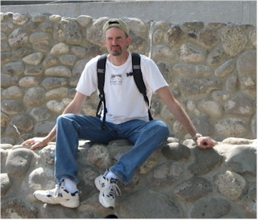 |
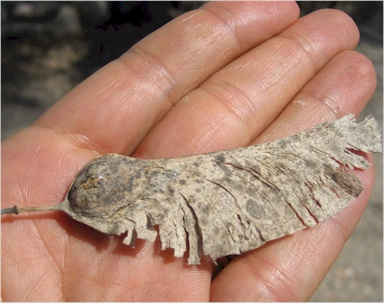 |
| Eric will not like this picture. | Giant versions of the "whirlygigs" that we get from our Maple trees. |
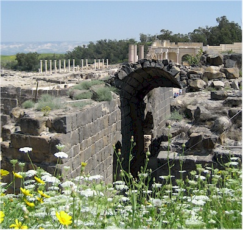 |
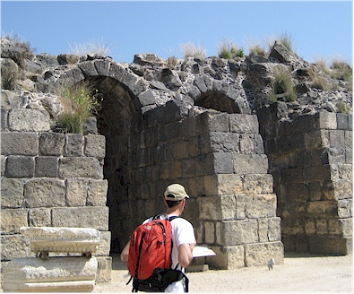 |
|
Entrances into the theater. |
|
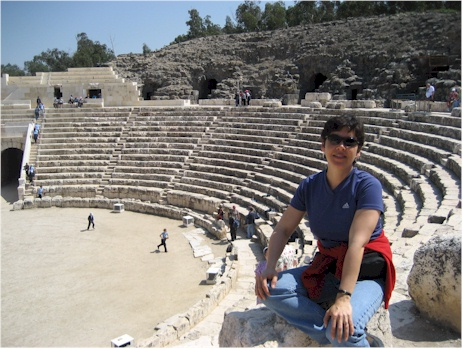 |
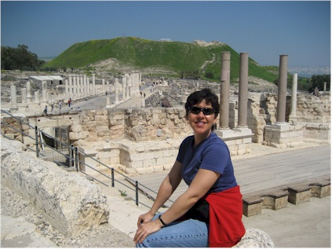 |
| Me & the theater | Me & the city - I was in a posing mood. |
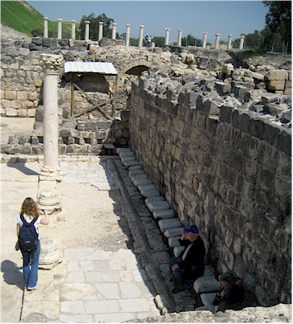 |
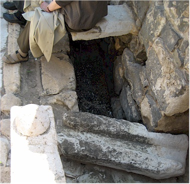 |
| A public toilet - you should have seen
it! You would have sat across the span between two rocks. A little canal of water was constantly running below. |
This shows part of the water channel and someone
sitting on one of the ledges in the public toilet. |
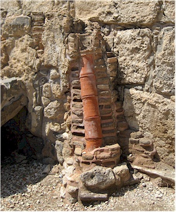 |
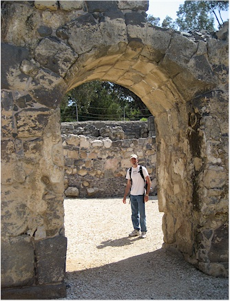 |
| Indoor plumbing. We saw this in Pompeii also when we visited there several years ago. Neat. |
Handsome tourist. |
| Getting artistic. | The main street, nearly deserted now. |
|
This was some other tour guide explaining how they erected these huge columns and how they would hook two of them together. Unfortunately I've since forgotten what he said. |
|
|
My attempt at a panoramic shot of the whole area from the top of the Tel. |
|
| Up on top of the Tel - the site of the city
was where Saul and his sons' headless bodies were put on display. I'm sure that caused a few bad dreams for the little ones of the city. |
The theater viewed from the top. |
| I loved those strange little purple flowers. | Kendall watching out for Chris as he made the long hobble down. |
Ancient gutters in the street - very clever. |
|
|
|
Our next stop was an oasis called Gan Ha-Shlosha or
Sachne. (We called it Sachne, pronounced sack-knee.) From Frommer's: Fed by aquifers, Sachne is Israel's large and unique natural swimming pool. It is remarkably clear of solvents and silt, and miraculously warm year-round. With a natural Jacuzzi beneath its waterfall, tall trees, and distant mountains, Gan Ha-Shlosha/Sachne is a favorite Israeli picnic and swimming site. It is my biggest regret of the trip that we did not get to swim here. It was so peaceful and beautiful, I would have enjoyed that very much. But hey, at least we got to enjoy a nice lunch here and I was able to stick my tired feet in the water, so I am happy for that. |
| Eric, reclining on one elbow to eat like they did back in the day. |
|
| I have this series of shots I call, "Put
your feet up" with beautiful scenery that I've had the pleasure of seeing over the years. I just had to get one of those here.
|
Next was Gideon's Springs - also called the
Herodian Springs after King Herod.
|
Gideon's story was the classic underdog tale. He was the least
important son of an unimportant clan. They were being harassed by the
Mideonites who would wait until the Israelites had finished all the work of
threshing wheat; then they would come in and take it. So, Gideon was
hiding in the bottom of a wine press, trying to thresh wheat without being
seen when the following occurred: And the Angel of the
LORD appeared to him, and said to him, �The LORD is with you, you
mighty man of valor!� Judges 6:12 The Lord told Gideon
that He would use him to defeat the Midianites. Gideon was of course
frightened and skeptical, so it took awhile to convince him that this was
real.
Eventually Gideon believed it and raised a fairly big army - over 30,000 to go up against about 135,000 Midianites. But God did not like these odds. It would be too easy for the Israelites to think they won the battle under their own power: And the LORD said to Gideon, �The people who are with you are too many for Me to give the Midianites into their hands, lest Israel claim glory for itself against Me, saying, �My own hand has saved me.� Judges 7:2 So God had Gideon send home anyone who was afraid, and 22,000 of troops went home. Then the Lord said, "The people are still too many; bring them down to the water, and I will test them for you there..." He told Gideon to have the men drink from the spring. Only those who scooped the water to their mouths with their hand were allowed to stay; those who got down on their knees to drink were sent home. Only 300 men scooped the water and were allowed to stay. Pastor Ken jokes that they drank that way because they were so old and fat they couldn't get down any further than that. This way there would be no doubt that God saved them if Gideon's troops were 300 old, out of shape guys. :-) I'll let the Bible tell the rest of the story: |
| Then he divided
the three hundred men into three companies, and he put a trumpet into every
man�s hand, with empty pitchers, and torches inside the pitchers. And he
said to them, �Look at me and do likewise; watch, and when I come to the
edge of the camp you shall do as I do: When I blow the trumpet, I and all who
are with me, then you also blow the trumpets on every side of the whole camp,
and say, �The sword of the LORD and of Gideon!�� So Gideon and the hundred men who were with him came to the outpost of the camp at the beginning of the middle watch, just as they had posted the watch; and they blew the trumpets and broke the pitchers that were in their hands. Then the three companies blew the trumpets and broke the pitchers�they held the torches in their left hands and the trumpets in their right hands for blowing�and they cried, �The sword of the LORD and of Gideon!� And every man stood in his place all around the camp; and the whole army ran and cried out and fled. When the three hundred blew the trumpets, the LORD set every man�s sword against his companion throughout the whole camp; and the army fled to Beth Acacia, toward Zererah, as far as the border of Abel Meholah, by Tabbath. And the men of Israel gathered together from Naphtali, Asher, and all Manasseh, and pursued the Midianites. Judges 7:16-23 (But they probably didn't pursue them very fast if they were out of shape!) Jokes people, jokes!
|
|
A bird we saw overhead when we arrived. |
|
|
|
Here Pastor Mark has Kendall & Rigert act out
the two ways of drinking from the spring as described in the Bible story above. |
|
Teaching: Pastor Mark Pastor Mark went through the story of Gideon & the battle with the Midianites
that I related above. He brought out the lesson that Gideon learned
here: 1 + God = Majority One common thread we see in the Bible over and over again: you can never be too small to be used by God but you can be too big. |
|
|
|
|
| The praise & worship before the teaching
was so good, we decided to do it again afterward. The cave where the spring starts is behind us.
|
This was some really strange tree with these little
'wart' things growing all over it.
|
| From Gideon's Springs we started the two-hour drive down to the Dead Sea. | Another stork along the way. |
|
A beautiful field of poppies we saw along the way. |
|
| Look out - Amir is behind the wheel!! | |
| Some tanks we saw at a gas station. | Dead Sea for now, Jerusalem in a few days. |
| A guard post as we entered the West Bank. | Sheep herding |
From Wikipedia: The West Bank is a landlocked territory and is the eastern Part of the Palestinian territories on the west bank of the River Jordan in the Middle East. To the west, north, and south the West Bank shares borders with the state of Israel. To the east, across the Jordan River, lies the country of Jordan. The West Bank also contains a significant coast line along the western bank of the Dead Sea. Since 1967 most of the West Bank has been under Israeli military occupation. Amir is an officer in the military and did a lot of work here to bring water and more sanitary conditions to the residents of this area. The residents seemed to do a log of sheep and goat herding from what we could see from the road. |
|
| This is looking into the country of Jordan. | Caves dotted the hillsides everywhere. |
|
Somewhere in here we reached the end of the Gilboa mountain
range, which is where Also somewhere in here is the actual site where John the
Baptist baptized Jesus. |
|
| I think these were date palms but I'm not
sure. |
I think these show the caves where the first Dead
Sea Scrolls were found. |
| The Dead Sea and the mountains on the other
side. Mt. Nebo may be pictured, I'm not sure. It is the mountain from which Moses saw the Promised Land before he died. Moses is also buried somewhere over there. |
More of the caves all along the western side of the
Dead Sea. |
|
|
|
| Jericho - Somewhere in here we
passed the city of Jericho. I didn't get a picture and we didn't visit
the city itself. Jericho is believed to be one of the oldest continuously-inhabited cities in the world, with evidence of settlement dating back to 9000 B.C. It is also the city that God helped Joshua to destroy - you may know the song, "Joshua Fought the Battle of Jericho" (I didn't, but many people seem to.) This is described in Joshua 6:1-26. |
|
|
|
|
|
Dead Sea - Wikipedia info:
The Dead Sea is 1,385 feet below sea level and its shores are the lowest point on earth. It is also 1,240 feet deep. I was told it is the saltiest water in the world but Wikipedia disagrees. Anyway, it is ten times saltier than the ocean. The Jordan River is the only major water source flowing into the Dead Sea, although there are small perennial springs under and around the Dead Sea, creating pools and quicksand pits along the edges. There are no outlet streams. This makes it an endorheic lake - which means that when water comes in, it does not flow out - the only way it can go out is by evaporation and seepage. Around three million years ago what is now the valley of the Jordan River, Dead Sea, and Wadi Arabah was repeatedly inundated by waters from the Mediterranean Sea. The waters formed in a narrow, crooked bay which was connected to the sea through what is now the Jezreel Valley. The floods of the valley came and went depending on long scale climate change. The lake that occupied the Dead Sea Rift, named "Lake Sodom", deposited beds of salt, eventually coming to be 2 miles thick. According to geological theory, approximately two million years ago the land between the Rift Valley and the Mediterranean Sea rose to such an extent that the ocean could no longer flood the area. Thus, the long bay became a lake. |
|
|
We didn't have much time left that day, so Amir took |
|
| Extremely blurry shot of another guard post
near our hotel. Is it just me, or does this picture give you motion sickness? |
The view from our hotel room. |
| For some reason, they made the guard gate at the
hotel look like a sand thing. It reminded me of something we scoop out of our cat's litter box. |
Here we are, checking out this fancy hotel. It
was by far the nicest of the three, but we missed our Nof Ginosar! |